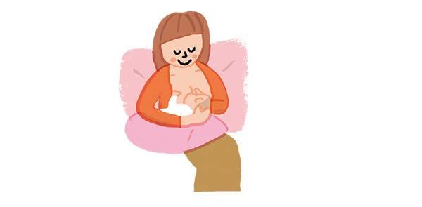

Đối với các mẹ sinh con bằng phương pháp sanh mổ thường mang tâm lý lo lắng về việc mình sinh mổ thì có thể thực hiện cho con bú mẹ được hay không. Liệu rằng mình có thể có sữa cho con bú sớm hay không? Phải cho bú tư thế nào để không bị đau? Sử dụng thuốc giảm đau có ảnh hưởng đến con không? Làm thế nào nếu trường hợp con không thể nằm chung với mẹ sau mổ?... Đây chỉ là một vài trong rất nhiều câu hỏi mà các mẹ sanh mổ lo lắng trong giai đoạn vài ngày đầu sau mổ lấy thai.
Tuy nhiên, bất chấp những gì mẹ có thể đã nghe, việc cho con bú sau khi sinh mổ là hoàn toàn có thể. Mặc dù mẹ có thể phải đối mặt với những khó khăn, nhưng hầu hết các bà mẹ muốn nuôi con bằng sữa mẹ đều có thể thực hiện thành công sau khi sinh mổ.
Nhiều nghiên cứu chỉ ra rằng sinh mổ là một yếu tố ảnh hưởng đến việc cho con bú, thường gặp nhất là sữa mẹ về chậm hoặc mẹ ít sữa, đặc biệt là việc cho bú sớm. Hiểu về nguyên nhân tại sao lại như vậy có thể giúp mẹ phần nào có sự chuẩn bị tốt để vượt qua những khó khăn này:
Chắc hẳn mẹ đã nghe nhiều về lợi ích của việc cho con bú sớm giai đoạn 1 giờ đầu sau sanh. Hầu hết người mẹ sanh thường được thực hiện da kề da và cho con bú ngay khi con vừa lọt lòng. Đối với mẹ sinh mổ thì sẽ có 2 trường hợp: mẹ và bé da kề da hoặc phải cách ly 2 mẹ con tạm thời.
– Với các mẹ sinh mổ dùng phương pháp vô cảm là gây tê ngoài màng cứng hoặc gây tê tủy sống và sau khi bắt bé ra sức khỏe của mẹ và bé đều ổn định thì 100% các trường hợp sẽ được thực hiện da kề da (tại Bệnh viện Từ Dũ). Lúc này thậm chí mẹ có thể cho con bú ngay cả khi còn trong phòng mổ.
– Với các mẹ sinh mổ dùng phương pháp gây mê toàn thân, hoặc vì lý do sức khỏe của bé cần được chăm sóc sơ sinh đặc biệt thì mẹ và bé sẽ không được thực hiện da kề da. Việc bú mẹ sẽ không được bắt đầu sớm, tuy nhiên mẹ đừng quá lo lắng sẽ làm tâm lý của mẹ không tốt, điều này cũng trực tiếp ảnh hưởng lên việc tạo sữa. Trường hợp này mẹ cần nhiều hơn thời gian để phục hồi sau mổ hơn, hãy tạo mọi điều kiện cho cơ thể được điều dưỡng tốt và mẹ sẽ ôm con da kề da và tập cho con bú ngay khi 2 mẹ con có thể gặp lại nhau, bé vẫn được hưởng những lợi ích từ việc nuôi con bằng sữa mẹ.
Sữa mẹ có 2 giai đoạn chính: sữa non và sữa trưởng thành.
• Sữa non: Được hình thành từ tuần 14 – 16 của thai kỳ và được tiết ra trong 1 – 3 ngày đầu sau sanh, có màu nhạt, sánh đặc. Lượng sữa non ít nên mẹ sẽ không cảm thấy căng vú.
• Sữa trưởng thành: Sau 3-5 ngày, sữa non chuyển thành sữa trưởng thành. Sữa trưởng thành gồm có sữa đầu bữa (có màu trắng, hơi xanh, chứa nhiều nước và các chất dinh dưỡng) và sữa cuối bữa (có màu trắng sữa, chứa nhiều chất béo, cung cấp nhiều năng lượng).
